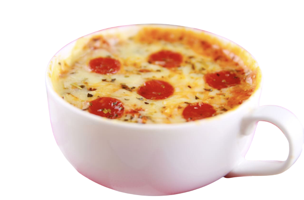

Armaan's Food Item
A brief about my Food Item
In this unit, we were supposed to make a food item but the idea of the food item had to be adapted
from an existing food item. I chose to make a pizza and added my own element. These days, people want the taste of
junk food while having the nutrients of a healthy food item. I chose to change a pizza, make it healthier and
I also made it easy to make.
Want to know more about
my microwable healthy pizza?
The differences that my pizza has compared to a normal pizza is that, my pizza;
1) is healthy as it is made up of all healthy ingredients;
2) does not make a huge mess while making the dish as it is microwavable.
If you want to know more about the for who, why and how, visit my e-portfolio
task
here . This e-portfolio talks about how I got to my final choice and design and how I executed it to choose
my ingredients and make my dish.
Ingredients and steps on
how to make it
On my e-portfolio, is the step-by-step instructions along with the list of ingredients on how to make this dish.
If you are not able to find it, click on
this link
to get you redirected to the particular section.

Image of the food item
(Just an idea image and not the final image)